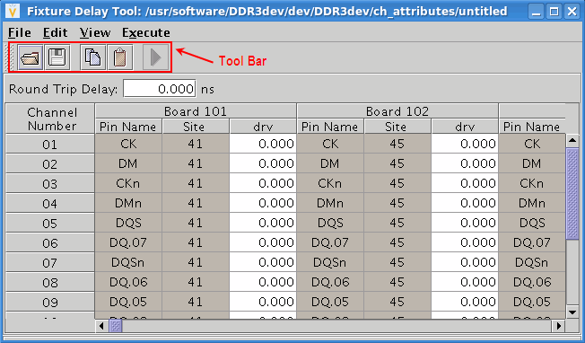

The Fixture Delay window toolbar
The toolbar in the Fixture Delay window provides quick access to some of the functions from the Fixture Delay window menus. The toolbar and its functions are shown in the figure below.

Functional changes
- Introduced before SmarTest 6.3.2